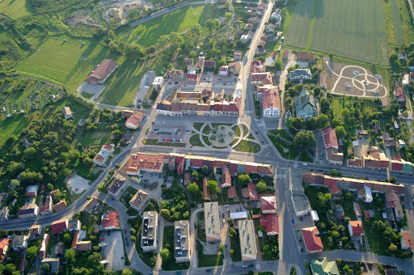
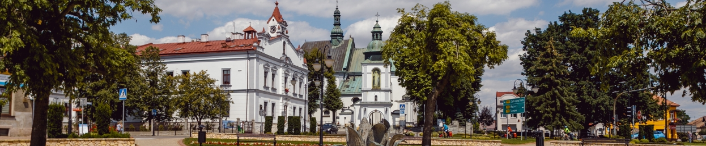

Żabno
Żabno – miasto w powiecie tarnowskim (woj. małopolskie) położone na prawym brzegu Dunajca. Siedziba gminy miejsko-wiejskiej Żabno.
Powierzchnia Żabna wynosi 11,13 km², według danych GUS z 31 grudnia 2019 r. miasto liczyło 4200 mieszkańców.


źrodło:
Wikipedia